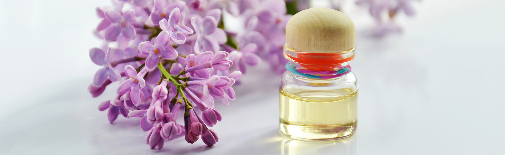
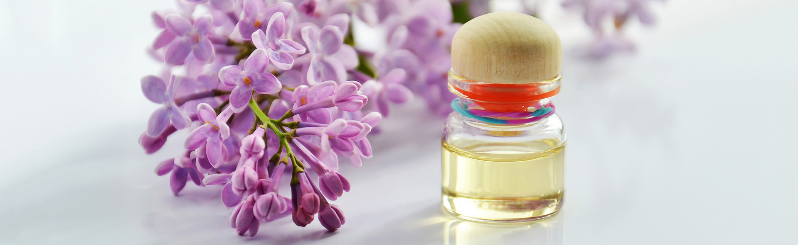

BIEN-ÊTRE & DÉTENTE
LE BIO AU SERVICE DE SOINS D’EXCEPTION
LES JARDINS SUSPENDUS
Revisitent l’institut de beauté classique en boutique spa bio. Notre équipe d’expertes teste en permanence
toutes les marques de cosmétiques naturels et biologiques du marché afin de sélectionner minutieusement
les plus efficaces et les mieux adaptées à chaque type de peau.
“Notre objectif est de proposer des produits bio d’exception, véritable gage de qualité de nos soins.”
NOS MASSAGES
Soin détente
(1h | 150€)
MASSAGE RELAXANT
Pour évacuer le stress ou la fatigue, offrez-vous un moment unique de détente grâce aux gestuelles techniques développées pour nos soins relaxants. Prodiguant un véritable lâcher prise, ils permettent une régénération profonde du corps et de l'esprit. Renouez avec la sérénité et laissez-vous aller à la plus profonde relaxation.

Soin Découverte
(1h | 200€)
MASSAGE A LA BOUGIE
Au contact de votre peau, la cire fondue de bougie se transforme en huile onctueuse et réconfortante. Composé entre autres de pétrissages des muscles et de manœuvres enveloppantes, le massage à la bougie est un véritable délice pour vos sens.Le massage à la bougie est une technique ancestrale thaïlandaise, les bougies utilisées sont spécifiques et possède un point de fusion très bas afin de permettre une liquéfaction rapide sans aucun risque de brûlures.

Soin relaxant
(1h30 | 250€)
MASSAGE ABHYANGA
Inspiré de la médecine indienne Ayurvéda, le Soin-Massage Détox Abhyanga est un massage millénaire, tonique et profond. Grâce aux techniques de Dermapuncture sur le dos, le ventre, la tête et les jambes il va permettre de détendre profondément les muscles et de libérer intensivement les toxines.

NOS SOINS DU VISAGE
Inspirés de gestuelles techniques traditionnelles venues d'Asie, les protocoles innovants de nos soins du visage sont issus de la Dermapuncture, technique manuelle exclusive d’acupuncture sans aiguille qui associe des manoeuvres énergétiques profondes à l'efficacité d'actifs végétaux naturels pour une peau douce, lissée et un teint éclatant.
Soin plaisir
(1h | 100€)
SOIN-MASSAGE DU VISAGE "KO BI DO" LIFTANT ET REPULPANT
Véritable soin "anti-âge global", ce lifting manuel inspiré du massage japonais "Ko Bi Do", agit en profondeur sur les rides, la fermeté, les taches pigmentaires et l’éclat, tout en insistant sur le contour des yeux, la bouche, le décolleté et les bras. Vous retrouvez une peau repulpée, lissée, un teint éclatant et un esprit parfaitement détendu.

Soin evasion
(1h | 100€)
SOIN-MASSAGE DU VISAGE JEUNESSE ET ÉCLAT TAOÏSTE
Ce soin de prévention "premières rides" est issu d’un Rituel de massage ancestral inspiré de la Médecine Traditionnelle Chinoise. Le travail sur les points d’acupression permet de détendre les traits du visage.

NOS EXPERTES
Pauline | Praticienne
Pauline est depuis toute petite passionnée par le monde de la cosmétique. C’était pour elle une évidence de devenir esthéticienne et de s’occuper du bien-être des autres.
 Après avoir obtenu un bac littéraire, Pauline a fait des études d’esthétiques en alternance ce qui lui a permis d’entrer directement dans la vie professionnelle.
 Forte de 4 ans de formations et d’expérience professionnelle, Pauline n’envisage pas sa carrière autre part que dans le domaine du bien-être et de la beauté.
Attentionnée et véritable experte beauté, elle saura vous conseiller dans le choix des produits à appliquer au quotidien et surtout elle vous donnera toutes les petites astuces pour embellir votre peau.


Margot | Praticienne
Margot a décidé de perfectionner ses mouvements en suivant des études d’esthéticienne. Le monde du bien-être l’a tout de suite séduit : prendre soin des gens, les aider à s’évader lors d’un soin du visage ou d’un massage ayurvédique, être à leur écoute pendant une beauté des mains, permet à Margot de s’épanouir pleinement.
« Travailler aux Jardins Suspendus correspond totalement à ma vision du spa. Depuis que je suis devenue maman, je fais beaucoup plus attention aux produits que je mets sur ma peau et celle de mon bébé. Ici, chaque cosmétique a été choisi minutieusement et est adapté à chaque type de peau. Tous les soins sont personnalisés et permettent d’établir une relation de confiance et de suivi dans le temps. Etre proche de mes client(e)s, les comprendre et répondre à leurs attentes est ma priorité ! »
Elisabeth | Praticienne
Élisabeth, passionnée par le massage bien-être et la naturopathie depuis de nombreuses années, a finalement décidé d’y consacrer sa vie professionnelle.
Elle est désormais diplômée praticienne de massage bien-être du collège européen de naturopathie traditionnelle holistique (CENATHO), école agréée par la fédération française de massage bien-être (FFMBE), où elle y a appris les techniques de massages occidentales et asiatiques.
 Grâce à sa maîtrise des gestes et sa délicatesse, Elisabeth vous offrira des moments d’évasion et de détentes exceptionnels.


Tous les jours de 9h00 à 20h
N’hésitez pas à nous contacter pour toute demande. Nous serons ravis de vous aider !